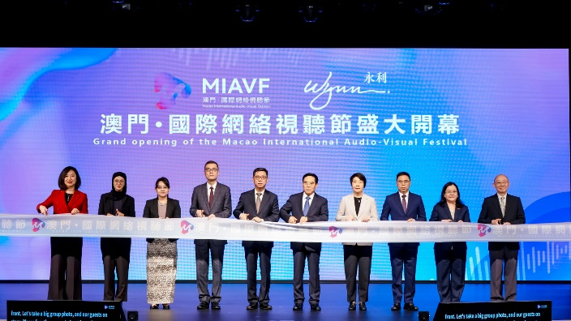
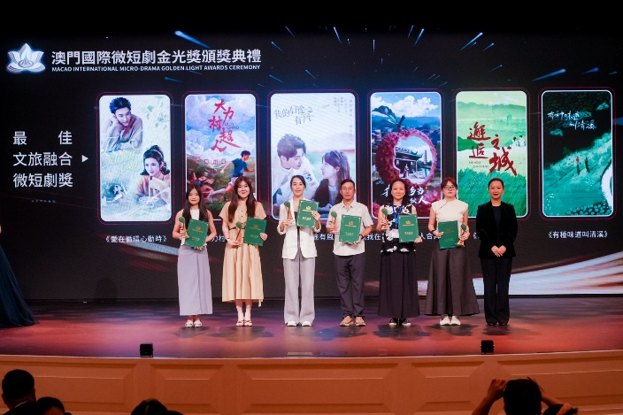
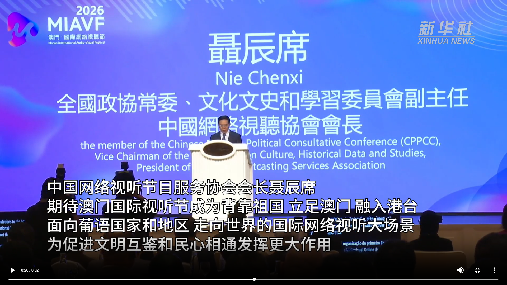
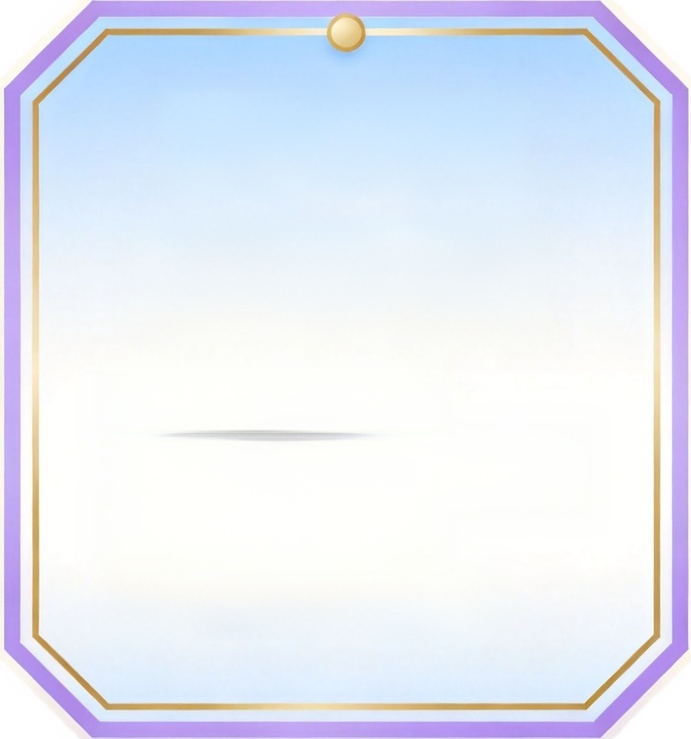
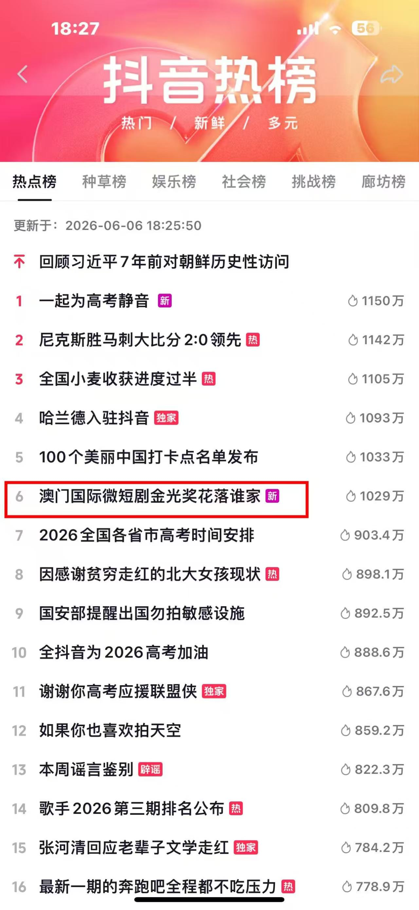
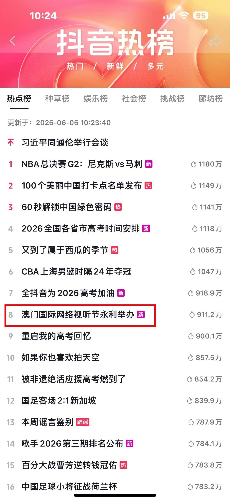

活動概覽
國家級指導、兩地主辦、澳門多方支援，共同打造網絡視聽國際盛事。
「澳門·國際網絡視聽節」於 2026 年 6 月 1–2 日在永利澳門舉行。活動相關內容通過新聞媒體、短視頻平台及社交媒體持續擴散，累計在海內外平台實現超一億人次流覽熱度。
視聽節以澳門為支點，串聯海峽兩岸暨港澳與全球網絡視聽產業，探討內容出海與產業合作的新路徑。
指導 · 主辦 · 支援單位
指導單位
- 國家廣電總局網絡視聽節目管理司
- 國家廣電總局國際合作司
- 澳門中聯辦宣傳文體部
- 外交部駐澳門特派員公署新聞及公共外交部
- 澳門特區政府文化局
- 中葡論壇（澳門）常設秘書處
主辦單位
- 中國網絡視聽節目服務協會
- 澳門網絡視聽協會
- 澳門文化界聯合總會
- 澳門文化推廣協會
- 南光文化創意產業公司
支援單位
- 澳門特區政府招商投資促進局
- 澳門特區政府旅遊局
- 中國電信（澳門）有限公司
三大板塊
★
浪潮之夜 · 澳門國際網絡達人盛典
匯聚海內外網絡視聽創作者與達人，致敬年度優質內容與影響力人物。
◆
澳門國際網絡傳媒產業峰會
海峽兩岸暨港澳業界代表共議網絡視聽產業新機遇與出海路徑。
▲
澳門國際微短劇「金光獎」
首個微短劇國際獎項，面向全球徵集評選，打造微短劇國際標杆。



澳門 · 國際網絡視聽節活動日程
2026 年 6 月 1–2 日 · 永利澳門
| 日 | 時間 | 活動 |
|---|---|---|
| 6/1 | 18:00 | 浪潮之夜 · 澳門國際網絡達人盛典 |
| 6/2 | 10:00 | 開幕典禮 |
| 6/2 | 10:35 | 主論壇 |
| 6/2 | 14:00 | 灣青 AI 聯全球 |
| 6/2 | 14:30 | 分論壇 |
| 6/2 | 15:00 | 跨文化電商論壇 |
| 6/2 | 15:30 | 青少年健康論壇 |
| 6/2 | 19:00 | 澳門國際微短劇「金光獎」頒獎典禮 |
首屆戰報：現象級熱度，刷屏全網
截至 2026 年 6 月 25 日 · 首屆即破圈，全網累計曝光 1.2 億+
5800萬+
抖音觀看量
話題熱度 2800萬+ · 登熱榜 TOP6
話題熱度 2800萬+ · 登熱榜 TOP6
1000萬+
微博話題閱讀
1100萬+
快手話題熱度
斬獲社會榜 TOP2
斬獲社會榜 TOP2
840萬+
58 家海外媒體閱讀量
1.2億+
全網累計曝光
數億
平台開屏強制曝光
覆蓋日活用戶
覆蓋日活用戶
5 平台
抖音·快手·今日頭條
小紅書·西瓜視頻矩陣
小紅書·西瓜視頻矩陣
650+
現場與會者



視聽節是協會的年度旗艦項目。更多協會平時的活動與影視實踐，請見其他欄目。
查看協會活動 →